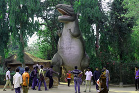

Boating on paddle or row boats in the blue water of Kanjia lake is an exhilarating experience. The multi-storey Boat Ghat is renovated to give new looks providing enough space for the visitors to relax and enjoy the picturesque fresh water
spreading over an area of more than 66 ha. lake. The boating service is outsourced for better management and satisfaction of the visitors. The lake is also known for its rich floral and faunal diversity and is declared as a Wetland of
National Importance by Govt. of India
White Tiger Safari
A unique white tiger safari established on 1st October, 1991 over an area of 12 ha in natural surroundings. It provides exposes you to unique situation where the visitors are confined in a vehicle and the animals roam in the open jungle.
Nandankanan is the first zoo in India with a white tiger safari.
Lion Safari
A twenty-minute drive through the meandering roads crisscrossing the natural forest in a specially protected vehicle takes the visitors straight into pride of lions in the lion safari over an area of 20 ha established in the year 1984.
Herbivore Safari
Herbivore safari was established in the year 2011 extending over an area of 21 ha. with a road network of 2 Km. length. The safari houses Barking Deer, Spotted Deer, Sambars, Four horned antelope, wild boar, jungle fowls, peafowls etc.
Bear Safari
A Bear safari covering an area over 5 ha. has been established in the zoo during the year 2012. Visitors can avail opportunity to sight sloth bears in their natural habitat through safari bus service.

Reptile Park
A reptile park, with a life size Tyrannosaurus at its entrance with an interpretation centre houses 27 species of reptiles including crocodiles, lizards, turtles and snakes. One would encounter crocodiles, king cobras and a huge Reticulated
Python inside the reptile park.
Amphibian enclosure
An amphibian enclosure has been established with viewers’ gallery over a plinth area of 56 m2. Necessary behavioural enrichments like flowing water saw dust, live plants, water pool etc. have been provided within the enclosure. The
enclosure is designed to house and display amphibian species. Nandankanan is the first premier large zoo to exhibit amphibians. At present there are 21 numbers of amphibians belonging to six species.
Open top Leopard enclosure
The new open top Leopard enclosure in Nandankanan is one among the very few in the country which attempts to exhibit this species in a large naturalistic enclosure which is open to the sky. This enclosure has been designed aesthetically to
maximise visitor satisfaction without compromising the safety and security of the animal as well as visitors. The enclosure which has an exhibit area with a deep dry moat also has four feeding chambers and two back kraals. The entire enclosure
has existing natural vegetation including two large Ficus bengalensis trees together with other trees and bushes. In addition, environmental enrichment by way of machan platforms, stone cave, wooden logs, water trough etc. has been provided to
encourage them to indulge in natural activities.
Toy Train
The toy train has been a great attraction for the children. Its starts from the toy train station which goes round a circular track of 1.58 Km. along the lake and thickly vegetated hillock area with free ranging herbivores. The entire facility
is now under renovation.
Aquarium
Aquarium is an integral component of a modern zoo. Adequate steps were taken to include well researched education materials on the various aquatic ecosystems both marine and fresh water indicating their uniqueness and conservation needs. The
aquarium was dedicated to the visitors on 4th February, 2008 by the Honourable Chief Minister, Odisha.
Battery Operated Vehicle
To facilitate elderly and physically challenged visitors in particular and tourists in general, Battery Operated Vehicles (BOVs) are available for tourists for an hourly trip around the zoo on payment of Rs.50/- per head and Rs 750/-and Rs
500/-per trip of large and small BOVs respectively.